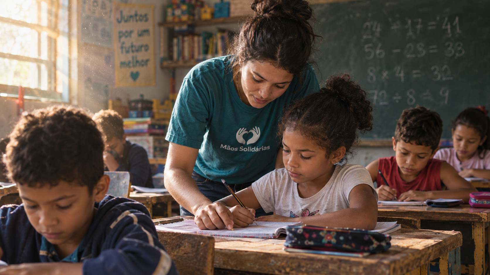
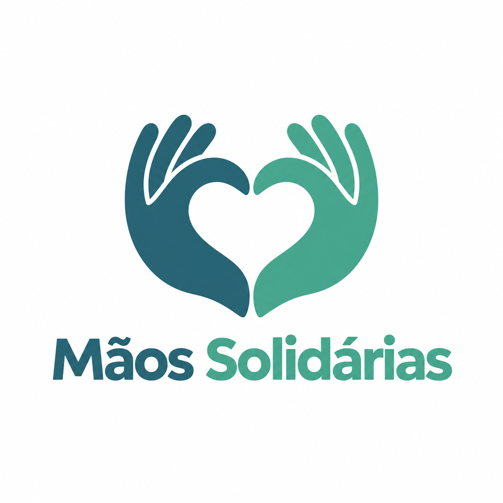
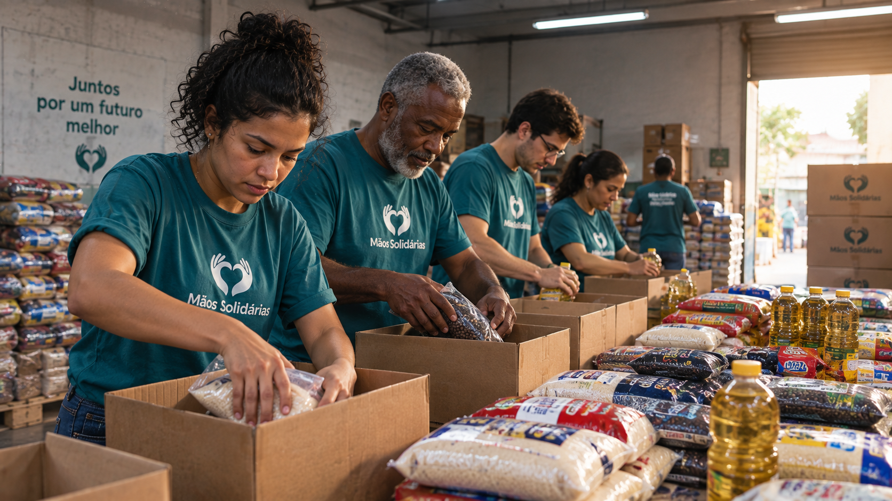
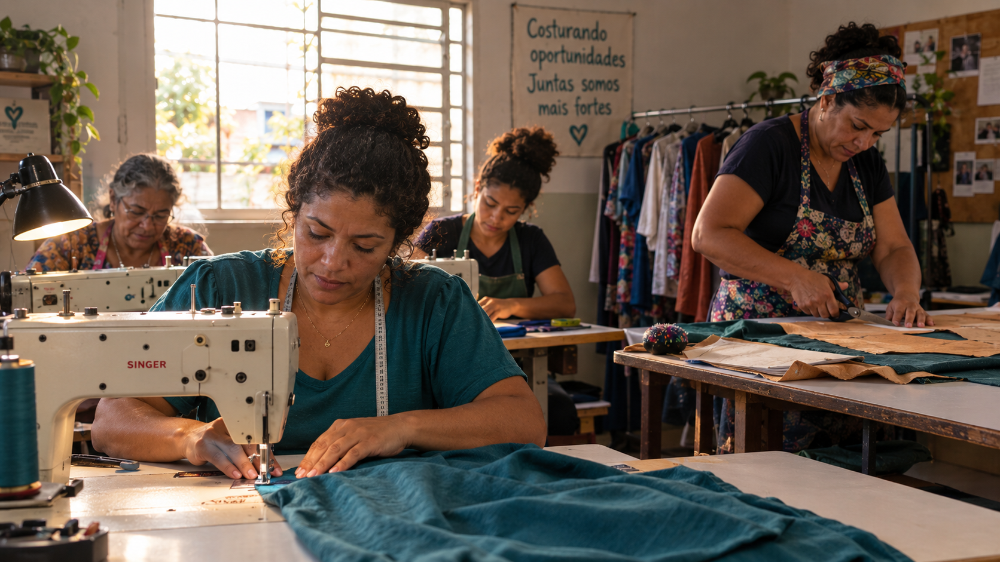

Educação para Todos
Vagas abertas
Reforço escolar gratuito para crianças de 6 a 14 anos em situação de vulnerabilidade.


Reforço escolar gratuito para crianças de 6 a 14 anos em situação de vulnerabilidade.

Distribuição mensal de cestas básicas para famílias cadastradas na comunidade.

Cursos profissionalizantes gratuitos para geração de renda familiar.
Sua doação sustenta diretamente os projetos acima. Cadastre-se como colaborador para saber como contribuir.
Quero DoarCadastro enviado!
Obrigado por colaborar com a ONG Mãos Solidárias.
As doações são recebidas via transferência bancária ou presencialmente na sede.
Sim, emitimos certificado de horas após 20h de atividade voluntária.
Não há tempo mínimo obrigatório; você define sua disponibilidade no cadastro.